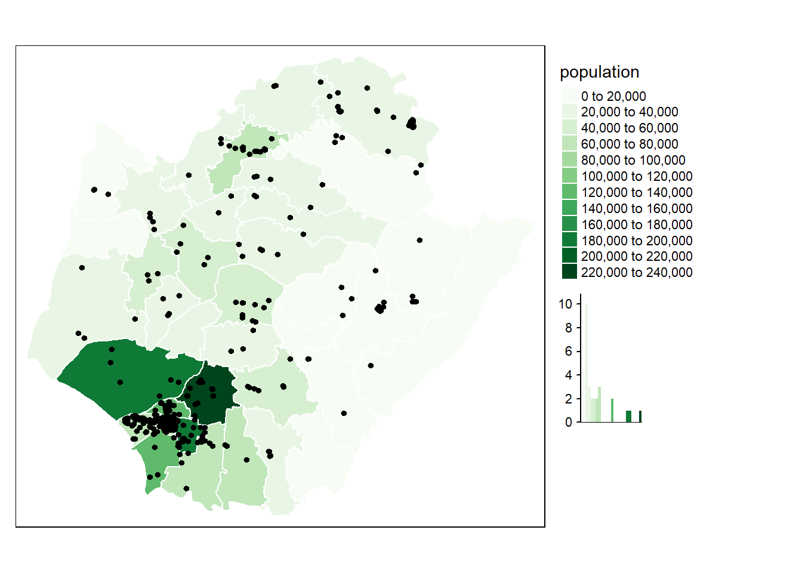

第 2 章 R_讀取shp檔+畫地圖
shp檔其實是由數個檔形成的向量地理圖資，包含：.shp, .shx, .dbf （前三個必需要有）及 .prj等一系列「相同名稱」、「不同副檔名」組成的地理資訊。(https://bookdown.org/tpemartin/108-1-ntpu-datavisualization/annotation-and-maps.html#%E8%AE%80%E5%85%A5shp%E6%AA%94)
# 取出spData套件附的world data
data(world,package="spData")
class(world) # 已是sf object## [1] "sf" "tbl_df" "tbl" "data.frame"查看目前的CRS(地圖的投影法，也稱之為座標參考系統)：
world %>% st_crs## Coordinate Reference System:
## User input: EPSG:4326
## wkt:
## GEOGCS["WGS 84",
## DATUM["WGS_1984",
## SPHEROID["WGS 84",6378137,298.257223563,
## AUTHORITY["EPSG","7030"]],
## AUTHORITY["EPSG","6326"]],
## PRIMEM["Greenwich",0,
## AUTHORITY["EPSG","8901"]],
## UNIT["degree",0.0174532925199433,
## AUTHORITY["EPSG","9122"]],
## AUTHORITY["EPSG","4326"]]world_plot <- world %>% st_geometry() %>%
ggplot()
world_plot+geom_sf()更換CRS：
world %>%
st_transform(crs="+proj=laea +y_0=0 +lon_0=155 +lat_0=-90 +ellps=WGS84 +no_defs") -> world_proj
world_proj %>%
ggplot()+geom_sf()2.1 找中心點：st_centroid()
- 找polygon中心點
- 形成新的sf object，有相同data frame但geometry column只是中心點的point geometry.
-如果一筆feature資料有多個中心點，可以設定：
st_centroid(..., of_largest_polygon = T)
load(url("https://www.dropbox.com/s/elnvocol0nnkcc9/sf_northTaiwan.Rda?dl=1"))sf_northTaiwan %>%
st_centroid(of_largest_polygon = T) ->
sf_centroid_northTaiwan
sf_centroid_northTaiwan## Simple feature collection with 3 features and 4 fields
## Geometry type: POINT
## Dimension: XY
## Bounding box: xmin: 121.6 ymin: 24.99 xmax: 121.7 ymax: 25.12
## Geodetic CRS: TWD97
## # A tibble: 3 x 5
## COUNTYID COUNTYCODE COUNTYNAME COUNTYENG
## * <chr> <chr> <chr> <chr>
## 1 C 10017 基隆市 Keelung City
## 2 A 63000 臺北市 Taipei City
## 3 F 65000 新北市 New Taipei City
## # ... with 1 more variable:
## # geometry <POINT [arc_degree]>2.2 輸出座標：st_coordinates()
找出中心點通常是要為圖加上新的圖層(geom_point layer)，還會再進行geom_point layer data frame架構：
sf_centroid_northTaiwan %>%
st_coordinates() -> coord_centroid_northTaiwan # 取出中心點座標
coord_centroid_northTaiwan## X Y
## 1 121.7 25.12
## 2 121.6 25.08
## 3 121.6 24.99sf_northTaiwan$x_centroid <- coord_centroid_northTaiwan[,"X"]
sf_northTaiwan$y_centroid <- coord_centroid_northTaiwan[,"Y"]sf_northTaiwan %>%
ggplot()+
geom_sf()+
geom_point(
aes(
x=x_centroid,y=y_centroid,
shape=COUNTYNAME, color=COUNTYNAME
), size=2
) - 由 https://data.gov.tw/dataset/7442 引入台灣直轄市、縣市界線圖資存在名為sf_taiwan的物件。
- 增加文字：
geom_sf_text(),geom_sf_label()
sf_taiwan=read_sf("sf_taiwan\\sf_taiwan.shp") sf_taiwan_simplify <- sf_taiwan %>%
rmapshaper::ms_simplify() # 幾何簡化(畫比較快)
sf_taiwan_simplify %>%
st_crop(
xmin=119, xmax=123,
ymin=21, ymax=26
) %>%
ggplot()+geom_sf()+
geom_sf_text(
aes(label=COUNTYNAME)
)
2.3 簡單的統計地圖
可以自己找些關於台灣的資料，現在我找的是台灣稻米產量。
Rice <- read.csv("Rice.csv" , encoding='BIG5')
Rice <- Rice[,c(2,4)]
colnames(Rice) <- c("COUNTYNAME", "AREA")
Rice$COUNTYNAME <- c("台中市", "台東縣","台南市","宜蘭縣","花蓮縣","南投縣","屏東縣"
,"苗栗縣","桃園市","高雄市","雲林縣","新北市","新竹市","新竹縣","嘉義市","嘉義縣","彰化縣")
sf_taiwan.new <- left_join(sf_taiwan, Rice, by = "COUNTYNAME")
sf_taiwan.new_simplify <- sf_taiwan.new %>%
rmapshaper::ms_simplify()
sf_taiwan.new_simplify%>%
st_crop(
xmin=119, xmax=123,
ymin=21, ymax=26
) %>%
ggplot()+
geom_sf(size = 0.2, aes(fill =AREA ))+
scale_fill_gradient(low = "#56B1F7", high = "#132B43", na.value = NA)+
theme_bw()2.4 2021世界人口變化百分比
資料來來自於：https://www.worldometers.info/world-population/population-by-country/
world_population <- read.csv("2021 World Population.csv")
world_population.1 <- world_population[,c(1,3)]
colnames(world_population.1) <-c(colnames(world)[2],"YearlyChange.per")
world.01 <- left_join(world, world_population.1) world.01 %>%
ggplot()+geom_sf(size = 0.2, aes(fill = YearlyChange.per))+ scale_fill_gradient(low = "#ffffff", high = "#17184b", na.value = NA)+
theme_bw()2.5 擷取一部分地圖
world %>%
filter(
region_un=="Asia"
) %>%
ggplot()+geom_sf()+
geom_sf_text(
aes(label=name_long)
)資料與code來自： https://bookdown.org/tpemartin/108-1-ntpu-datavisualization/
很推薦這個網站，教學仔細，還有許多資料可以練習，真的是讚讚！